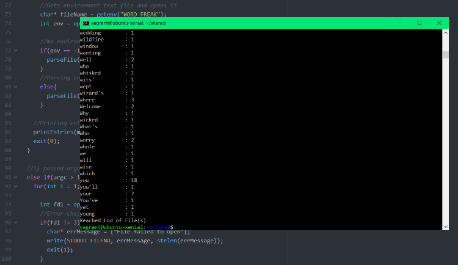
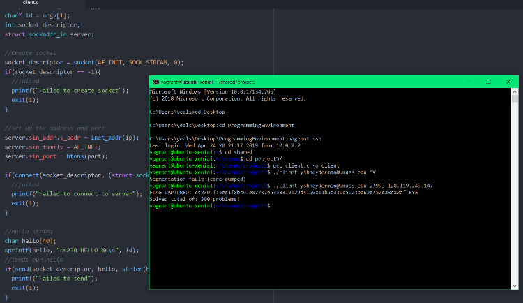
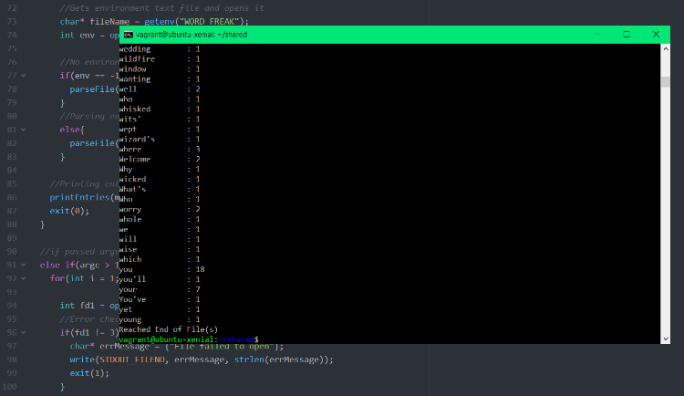
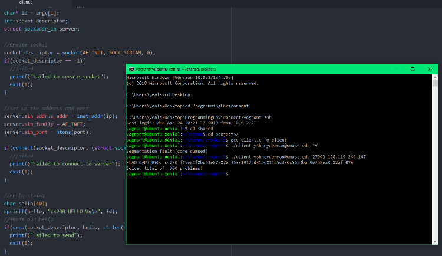

Education
GPA: 3.870

University of Massachusetts Amherst
Bachelor of Science
Double Major in Computer Science and Mathematics with Concentration in Computing
Awards: Dean's List, John and Abigail Adams Scholarship
Activities and Societies: UMass Cybersecurity Club, UMass Design Club, UMass Association for Computing Machinery
Coursework
Skills
Programming
- Languages: Java (3 Yrs), JavaScript (2 Yrs), C/C++ (1 Yr), Python (1 Yr)
- Skills: Data Structures, GitHub, Unit Testing, Image Processing, Machine Learning, Data Visualization, Computational Complexity, Networking, Algorithms, Artificial Intelligence, GUIs, Threads/Processes, Linux, Web Development, Object Oriented Programming, Operating Systems
- Technologies: HTML, CSS, jQuery, Node.js, Matplotlib, scikit-learn, NumPy, MongoDB, Mongoose, Mustache, Express, PostgreSQL, Spring Boot, React, Docker, Kubernetes
Videography and Design
- I have 7 years of experience in Videography and Graphic Design through self learning and my volunteering at North Andover CAM.
- Alongside my skills with camcorders, GoPro, DSLR cameras, lighting, directing, technical directing, audio, script writing, and storyboarding, I also have experience with:
- Advanced: Premiere Pro, Final Cut Pro X (Video Editing), Photoshop (Graphic Design), Illustrator (Graphic Design), Microsoft Office Suite
- Intermediate: After Effects (Visual Effects and Animation), Lightroom (Photography), InDesign (Page Design), XD (UX/UI Design), Audition (Audio)
Projects
Click on a project for more information

yshneyderman.github.io
A personal website template available to modify and use for your own. Based on Saad Pasta, Ashutosh Hathidara, Bootstrap Portfolio designs.
Updated on Aug 2020
 JavaScript
JavaScript HTML
HTML CSS
CSSyshneyderman.github.io

Old Website view and layout.
A personal website template available to modify and use for your own. Based on Saad Pasta, Ashutosh Hathidara, Bootstrap Portfolio designs.
Started working on personal website in March 2019 to keep track of educational and professional interests and showcase skills for potential employers. I've been adding to it anytime new experiences, skills, or classes come up that I believe would be useful to my profile as an applicant to academic programs or work opportunities.
Added personal and fun information over time. Feel free to copy and change for your own purposes!
Link to the GitHub repository:
30DaysCoding.com
Website to teach coding practices and interview preparation. Wrote guides and documents.
Updated May 2020
 Word
Word PDFJavaScriptHTMLCSS
PDFJavaScriptHTMLCSS30dayscoding.com


Screenshots of website and interview guide.
An educational website I worked on with a good friend and fellow UMass Amherst CS major Aryan Singh. We both agreed that it was unfair for modern resources to help teach people to improve their skills were behind paywalls and only available to people who were members of certain clubs/universities so we sought to create a repository of all of our experience with CS interviews. We had both passed interviews in FAANG companies and reached out to other friends who had similar experience to put together free links, documents, and resources to help teach these concepts.
We started working in early 2020 and published the site when COVID-19 was declared as a pandemic and everyone was at home - the perfect time to pick up/refresh these skills.
The initial LinkedIn posts recieved thousands of views and at some points the website had a few hundred users. The site was also featured in newsletters by the CICS department in emails recommending resources for career development. There are still current plans to add more free content such as resume parsers, more tips for acing an interview, and documents written by Aryan and I to discuss programming concepts like Arrays, Linked Lists, etc. with helpful graphics.
CS589 Projects
Series of projects for Machine Learning class. Learned theory and applied to coding projects.
Updated May 2020
 Python
Python
CS377 Projects
Series of projects for Operating Systems class. Learned theory and applied to coding projects.
Updated Apr 2020
CS326 Projects
Small Web Development projects from textbook and one team-based large Full Stack App project at the end.
Updated Dec 2019
 NodeJS
NodeJS MongoDB
MongoDB MustacheJavaScriptHTMLCSS
MustacheJavaScriptHTMLCSSCS326

TuneRater final project screenshot.
A 300 level class covering Web Development which began with a basic introduction to HTML/CSS and proceeded to teach about fundamental web technologies, industry trends, and important full stack concepts. Class featured weekly mini-projects as well as a final group project of our choosing.
TuneRater
Class formed teams of four and brainstormed a full stack application to develop that met the requirements of implementing certain web technologies and skills we learned through the year. The team worked in a Scrum/agile-like development flow with weekly standup meetings to work towards our goal of creating and presenting a fully functioning web app. The team came up with "TuneRater" - a site for aspiring musicians to create and share their music with a more art based community that could listen and critique their skills as an artist. We felt the need for this website in a world where Spotify and YouTube often did not provide the feedback an artist wants. The project uses Data Storage of music files, info, and account info on MongoDB, and a Node.js server to interact with (rating, comenting, and sending this info to the database)
CS383 Projects
Series of projects for Artificial Intelligence class. Learned theory and applied to coding projects.
Updated Dec 2019
Python
CS230 Projects
Series of projects for Computer Systems Principles class. Learned theory and applied to coding projects.
Updated May 2019
 C
CCS230
 



Screenshots of various C projects.
A 200 level class covering basic computer systems topics. Assignments included biweekly programming projects from subjects ranging from C language fundamentals, networking, threads, processes, etc.
Connect Four
Project for CS230 to implement a connect four game in C and create a simple AI to play against the player. Used a variant of the Min-Max algorithm to determine AI moves based on the board state and selected most optimal move. Printed formatted board to console after every move and saved moves to history.
Text Adventure
Project for CS230 to implement a text adventure game in C in a group of 3. Created a map with the objective of visiting each room and using an item to solve the bigger puzzle and win. Used data structures in C to implement rooms and items and makefile to easily recompile code.
WordFreak
Project for CS230 to create a program in C to parse through large text files and count/store how many times every word appeared in the text and then print the totals to the console. Made use of File IO and limited System Calls as well as environmental variables, piping, command line arguments, and keeping track of memory usage.
Threads and Synchronization
Project for CS230 to implement a program using threads and semaphores in C to simulate a ticket ordering call center with 5 lines and 3 operators so that any number of callers can call and wait until they connect to operator and buy a ticket.
Math Bot
Project for CS230 to write a computer networking client to connect to remote server in C and automatically answer a series of math problems by sending and recieving problems and solutions to the server until we are sent a flag that indicates the end of the program.
CS220 Projects
Series of projects for Programming Methodologies class. Coding projects in JavaScript.
Updated Dec 2018
JavaScriptCS220

Screenshots of various JavaScript projects.
A 200 level class covering Programming Methodology. Assignments included biweekly programming projects in JavaScript on topics from introductions to JavaScript, hogher order functions, JSON, filters, image processing, pathfinding, etc.
Image Manipulation
2 Projects for CS220 to implement image manipulation methods in JavaScript to blur images, filter by color channel, highlight edges, black and white, etc. First implemented through arrays and then redone with higher order functions like Map, Filter, and Reduce.
Matchmaking
Project for CS220 to use JavaScript to implement and test the stability of the Gale-Shapley matchmaking algorithm on a set of companies and candidates based on their preferences. Created tests to confirm the stability of the algorithm and that it returns correct result.
Data Wrangling with JSON
Project for CS220 to use topics learned in class such as fluentfilters and higher order functions to create a filering tool for restaurants in the Yelp dataset in JSON format. Created tests to ensure successful return for each function.
Interpreter
Project for CS220 to write a basic interpreter for a small amount of JavaScript in JavaScript. Were provided a parser function and implemented functions for evaluating expressions such as addition, subtraction, multiplication, boolean expressions, etc. Interpreter also works for basic blocks, statements, and mini programs.
Rapidly-Exploring Random Trees
Project for CS220 to implement helper functions in JavaScript to assist a RRT algorithm in finding collision-free paths in 2-dimensional space.
Pente
Collaborated on in-browser Pente game. Coded backend to track moves and game state.
Updated Apr 2019
JavaScript
RPGChess
Independently working on RPG themed chess-like game in Java.
Updated Apr 2019
Hack UMass VI
Team Hackathon project for Hack UMass VI of a remote light switch device and application for UMass students.
Updated Oct 2018
North Andover CAM
Volunteer Projects for North Andover Community Access and Media.
Updated Apr 2020
 Creative Cloud
Creative Cloud Photoshop
Photoshop Illustrator
Illustrator Premiere Pro
Premiere Pro Audition
Audition After Effects
After Effects Final Cut Pro
Final Cut Pro Lightroom
Lightroom XD
XD Media Encoder
Media Encoder InDesign
InDesignNACAM

Picture of me directing a football game.
NACAM Website
NACAM YouTube
The North Andover Community Access and Media is an organization that produces community access programming on the Public, Education, and Government access channels in North Andover. The organization's members are able to use studio equipment for productions to be featured on the channels as well as have access to trainings and assist in real productions that the studio helps out with around town such as sporting events, concerts, town meeting, festivals, etc.
I joined NACAM in October 2013 and in my time in High School I accumulated the most volunteer hours over any other member and spent a lot of time learning software and techniques listed in my skills section. As a member I volunteered at a lot of NACAM productions in a variety of roles such as cameraman, director, technical director, audio, equipment setup, floor director, lighting, editor, etc. I worked with employees at NACAM to film community events linked below:
8568F VEX Robotics Worlds Reveal 2017
Mr. North Andover 2017
Spring Concert 2016
Spring Concert 2015
Winter Concert 2016
All Town Band Festival 2016
North Andover Football Games
North Andover Town Meeting 2017
North Andover Santa Parade 2019
Santa Call In Show
The North Andover Journal
These links represent a small amount of the work that is available on YouTube. I volunteered at a variety of these sorts of events as well as helping out with Youth Programs and other smaller projects around the town.
Experience

Full Stack Software Engineering Intern
Nasdaq - Internship
Jun 2020 - Aug 2020 • 3 mos
Created Secure Multiparty Compute / Homomorphic Encryption proof of concept project with team at Nasdaq Boston Innovation Lab.
Learned to use and work with React.js, PostgreSQL, Java Spring Boot, Kubernetes, Docker, Flask.
Presented the project to Nasdaq Executives for evaluation on business promise and profitability for multiple use cases.

Independent Contractor / Laboratories & Facilities Intern
Indigo Ag. - Internship
Jun 2018 - Present • 2 yrs
Collaborated with environmental health and safety consultants, and managers to create educational multimedia content for Indigo’s online safety training site. Launched the platform to track user progress and ensure OSHA compliance.
Used technology skills to work on projects regarding office security, training employees, asset tracking, seating, etc.
Created pages, filters, maps, graphics, and SOP’s for a variety of tools used by the team including JIRA, OfficeSpace, Simpplr, SharePoint, and assisted in regular Lab & Facilities duties.

IT Support Analyst / Auditorium Technician
North Andover Public Schools - Summer Job / School Aide
Sep 2015 - Aug 2017 • 2 yrs
Led a small team to provide technical support for classrooms and school equipment.
Worked independently and in small teams on lighting, sound, and stage for events in the auditorium.
Worked with IT managers and learned about troubleshooting, researching, and repairing issues in computer software, hardware, printers, cables/wiring, and projectors. Occasionally took over core duties in their absence.
![]()
Volunteer / Youth Representative
North Andover Community Access and Media - Volunteer
Oct 2013 - Present • 7 yrs
Led and assisted in community film events and projects at the tv station.
Received training and experience working with professional video-editing/related software and equipment.
Elected Youth Representative to work with staff to develop programs for youth members